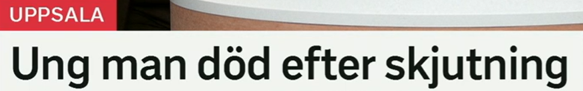
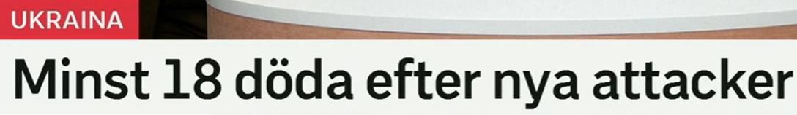
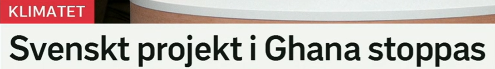
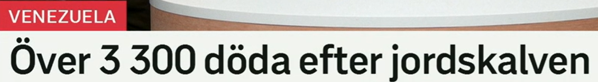
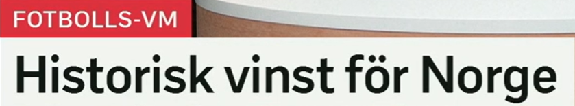

标题总览
Snipaste_2026-07-08_20-02-03.png
Snipaste_2026-07-08_20-11-02.png
Snipaste_2026-07-08_20-11-43.png · Snipaste_2026-07-08_20-12-43.png（重复截图）
Snipaste_2026-07-08_20-14-50.png
Snipaste_2026-07-08_20-16-33.png

Ung man död efter skjutning
一名年轻男子在枪击事件后死亡。
标题边界：efter 首先表达时间先后；截图没有提供案件经过。
skjutning · en-名词
词形：en skjutning–skjutningen–skjutningar
词族：skjuta–skjuter–sköt–skjutit
搭配：efter en skjutning, utreda skjutningen
近义：skottlossning（交火/开枪）
ung · 形容词
变化：ung–ungt–unga；比较级 yngre
反义：gammal, äldre
搭配：ung man, unga vuxna
提醒：en ung man 前通常有冠词，标题常省略。
Polisen utreder skjutningen. 警方正在调查枪击事件。
En ung man fördes till sjukhus. 一名年轻男子被送往医院。

Minst 18 döda efter nya attacker
新一轮袭击后至少 18 人死亡。
无谓语名词标题；minst 表示数字是下限，不应翻译成“大约”。
minst · 副词
含义：至少、最少
反义：högst（至多）
近义：åtminstone
搭配：minst 18 personer, i minst en vecka
attack · en-名词
词形：attacken–attacker–attackerna
近义：angrepp, anfall
动词：attackera, angripa
搭配：nya attacker, attack mot
Minst 18 personer har dött. 至少 18 人死亡。
Staden utsattes för nya attacker. 该城市遭到新一轮袭击。

Svenskt projekt i Ghana stoppas
一个瑞典项目在加纳被叫停。
stoppas 是现在时被动式，只表达项目被停止；标题没有说明谁作出决定或原因。
stoppas · s-被动
原形：stoppa；stoppas–stoppades–stoppats
主动：Någon stoppar projektet.
近义：avbrytas, läggas ner
反义：startas, fortsätta
projekt · ett-名词
词形：ett projekt–projektet–projekt–projekten
搭配：starta/driva/stoppa ett projekt
相关：klimatprojekt
场景：工作、科研、公共政策均高频。
Projektet stoppas. 项目被叫停。
Organisationen driver ett projekt i Ghana. 该组织在加纳开展一个项目。

Över 3 300 döda efter jordskalven
地震后死亡人数超过 3300。
över 在数字前是“超过”；jordskalven 是定复数“这些地震”。
över + 数字
含义：超过、多于
近义：mer än, drygt（略多于）
反义：under, färre än
搭配：över 3 000 personer
jordskalven · 定复数
词形：ett jordskalv–jordskalvet–jordskalv–jordskalven
近义：jordbävning
相关：efterskalv, epicentrum
搭配：drabbas av ett skalv
Över 3 000 människor drabbades. 超过 3000 人受到影响。
Flera efterskalv registrerades. 记录到多次余震。

Historisk vinst för Norge
挪威取得历史性胜利。
historisk 表示具有历史意义，不只是“发生在历史上的”。标题未说明比分或对手。
vinst · en-名词
词形：vinsten–vinster–vinsterna
近义：seger（胜利）；利润语境可指收益
反义：förlust
搭配：ta en historisk seger
historisk · 形容词
变化：historisk–historiskt–historiska
辨析：historisk 有历史意义；historie- 与历史学相关
搭配：historisk vinst, historiskt beslut
场景：体育、政治与重大事件报道。
Norge tog en historisk seger. 挪威取得历史性胜利。
Laget firade vinsten. 球队庆祝胜利。
重点词表、标题规律与自测
| 词汇 | 中文 | 搭配 | 近义/反义 |
|---|---|---|---|
| skjutning | 枪击事件 | efter/utreda en skjutning | skottlossning |
| minst | 至少 | minst 18 | åtminstone / högst |
| stoppas | 被停止 | projektet stoppas | avbrytas / startas |
| över | 超过 | över 3 300 | mer än / under |
| jordskalv | 地震 | ett kraftigt skalv | jordbävning |
| historisk | 历史性的 | historisk vinst | betydelsefull |
| vinst | 胜利、收益 | fira vinsten | seger / förlust |
三种省略
Ung man död 省冠词与谓语；Minst 18 döda 省谓语；Historisk vinst 用名词替代完整赛果句。
被动式
Projektet stoppas 突出事件，不说明行动者，是新闻标题常用选择。
填空
1. Projektet ___ i dag.
2. ___ 18 personer saknas.
3. Norge firar ___.
答案
1. stoppas 2. Minst 3. vinsten
翻译
“超过三千人”和“一次历史性胜利”。
参考答案
över tre tusen personer；en historisk vinst/seger